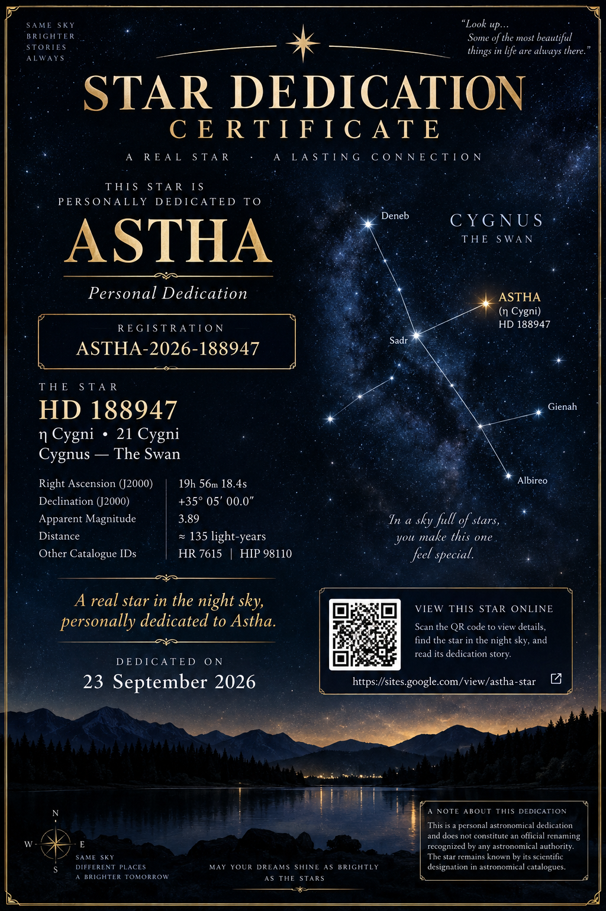

A personal dedication to a real star in the constellation Cygnus
Registered as a personal, commemorative dedication on 23 September 2026.
With lots of love, Rishi.
This immortal star will be a symbol of how much you mean to me.
You bring sunshine to my life, and the least I could do is bring you a star.

This page records a personal dedication of the real astronomical object HD 188947 to the name Astha. The star itself remains identified by its scientific catalogue designations.
This is an independent personal dedication registry. It is not an official renaming by the International Astronomical Union (IAU), NASA, or another astronomical authority.
Search for HD 188947, HIP 98110, or the coordinates 19h 56m 18.4s, +35° 05′ 00″ in an astronomy application such as Stellarium or an astronomical database.